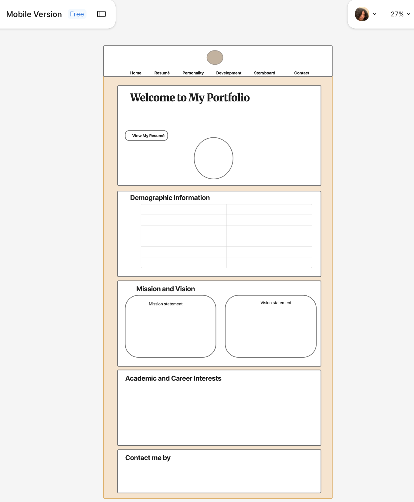
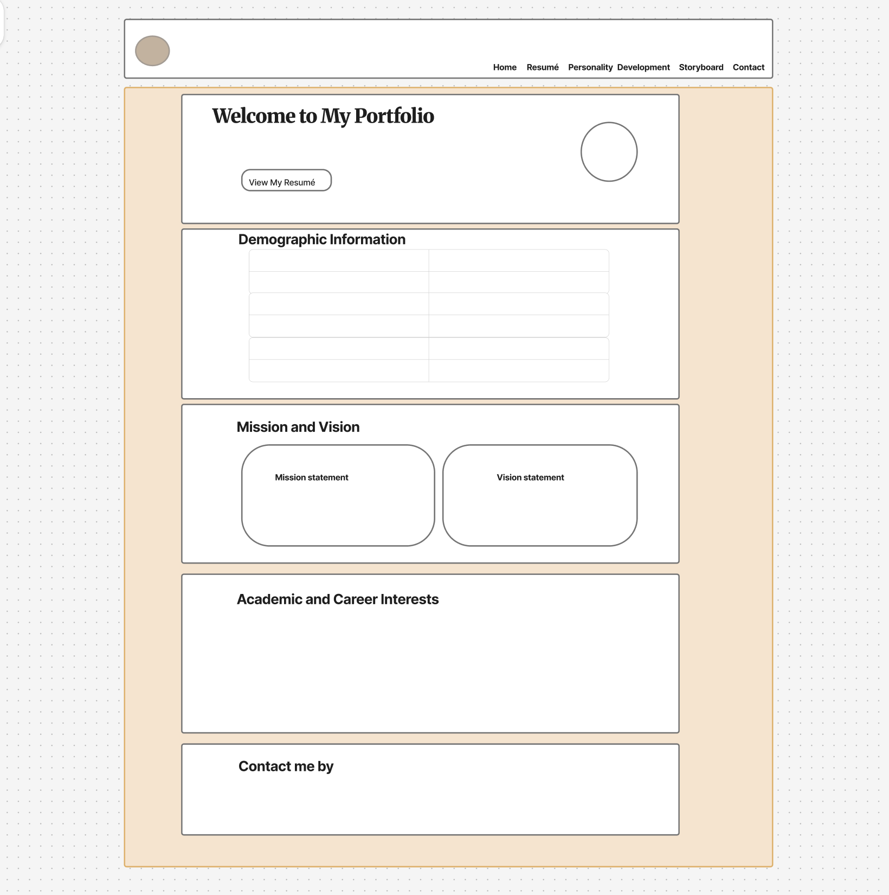
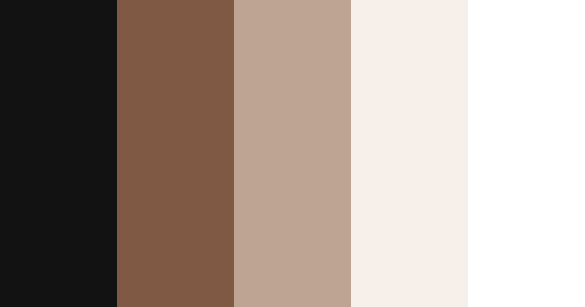

Jhaeda's Storyboard and Design Plan
This section presents the storyboard and design plan for my portfolio website. It includes the mobile and desktop layout designs, colour palette, typography, icons, GitHub repository link and a Free hosting link .
Mobile Layout Design
The mobile layout is designed for screens 600px and wider. The content is arranged in a simple single-column structure, making it easy to scroll, read and navigate on smaller screens.

Desktop Layout Design
The desktop layout is designed for screens 950px and wider. It uses a horizontal navigation bar, a centered main content area and wider sections. The mission and vision cards are placed side by side to make good use of the larger screen space.

Colour Palette
The colour palette uses black, warm brown, soft taupe, and cream to create a soft, comfortable, and professional design.

| Colour Name | RGB Value | Purpose |
|---|---|---|
| Black | RGB(17, 17, 17) | Used for the website header, footer, logo background, and strong contrast areas. |
| Warm Brown | RGB(126, 88, 66) | Used for buttons, borders, highlights, and important design accents. |
| Soft Taupe | RGB(189, 164, 145) | Used for soft accents, section details, and a warm professional appearance. |
| Cream Background | RGB(246, 239, 231) | Used as the main background colour to create a clean, soft, and comfortable design. |
Typography and Icons
| Design Element | Choice |
|---|---|
| Font Family | Arial, Helvetica, sans-serif |
| Root Font Weight | 400 normal and 700 bold |
| Logo | Text-based circular JH logo |
| Logo Dimension | 55px by 55px |
| Theme | Soft black, brown, taupe, and cream |
GitHub and Hosting
GitHub Repository: https://github.com/Jhaedathedeveloper/2102530_IA1_S3AY26.git
Free Hosting Link: https://jhaedathedeveloper.github.io/2102530_IA1_S3AY26/Codes/index.html
References
- Rohn, J., & Widener, C. (2005). Twelve Pillars. Jim Rohn International.
- Google. (n.d.). Looker Studio. https://lookerstudio.google.com/
- ClickUp. (n.d.). AI Businesses of 2025. https://clickup.com/blog/ai-business-ideas/